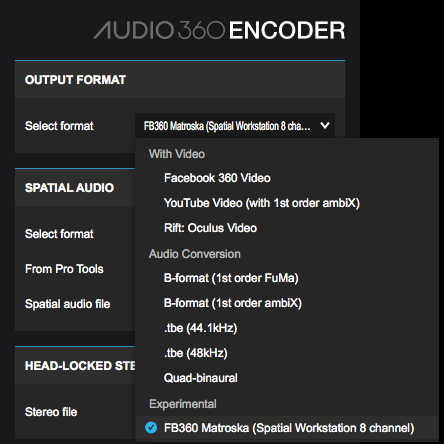
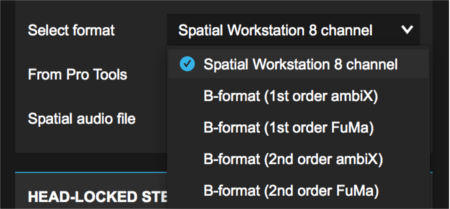

Add Spatial Audio To Oculus Video (Gear VR)¶
Spatial audio can be heard on the Gear VR either through streaming from Facebook or by side-loading videos for the Oculus Video app.
Streaming¶
To stream a video on Gear VR open the video in the Facebook Android app and tap the button on the top left marked “Watch in VR”. Alternatively the video will appear under the “Your Videos” tab of the Facebook 360 app. Instructions on creating videos with spatial audio for Facebook can be found here.
Side-loading: Spatial Workstation Mix¶
The Oculus Video app for Gear VR, from version 1.43.8, supports side-loading of a full 8+2 channel mix from the Spatial Workstation.
Encode the Video¶
Preparing videos with spatial audio for upload to Facebook requires the Facebook 360 Encoder application. The Encoder is available with the Spatial Workstation VST and AAX Addon installers on macOS and Windows.
Once installed, the Encoder application can be found in
- Mac HD/Applications/FB360 Spatial Workstation/Encoder/ on macOS
- By default: C:\Program Files\FB360 Spatial Workstation\Encoder\ on Windows
Set the OUTPUT FORMAT to FB360 Matroska (Spatial Workstation 8 channel)
Drop or load the multichannel spatial audio wav file. This is the audio that will rotate and respond when looking around a 360 video. The wav file can be of any sample rate, but is ultimately converted to 48000 samples per second.
Ensure you specify the spatial audio format. It can be one of these five:
- Spatial Workstation 8 Channel: If you have used a version of the Spatial Workstation before 3.0.0 to design your audio mix, this would be the output of the 3D master from your audio session
- B-format (1st order ambiX): First order ambisonics with ACN ordering and SN3D normalization, from any other mix or tool (4 channels)
- B-format (1st order FuMa): First order ambisonics with Furse-Malham ordering, typically the B-format audio from ambisonic microphones (4 channels)
- B-format (2nd order ambiX): Second order Ambisonics with ACN ordering and SN3D normalisation (9 channels), when using version 3.0.0 or later of the Spatial Workstation this would be the output of the 3D master from your audio session.
- B-format (2nd order FuMa): Second order ambisonics with Furse-Malham ordering, typically the B-format audio from ambisonic microphones (9 channels)
If using a Spatial Workstation 8 Channel file, ensure the From Pro Tools checkbox is ticked if the spatial audio file was exported from Pro Tools.
Optionally, you can also drop or load a stereo file for head-locked audio. This is audio that will not rotate when looking around a 360 video.

Follow the steps here to rename your file to a format supported by Oculus Video and transfer it to your device
{kind=link}
{kind=link}
Side-loading: B-format (ambiX) Mix – Using the FB360 Encoder¶
To sideload a video with only B-format audio (ambiX, FuMa), we would recommend using the FB360 Encoder to create a video file with the audio tracks muxed in.
Follow the same steps outlined in the previous section to create the video file, rename and transfer it to the phone to play it back in Oculus video.